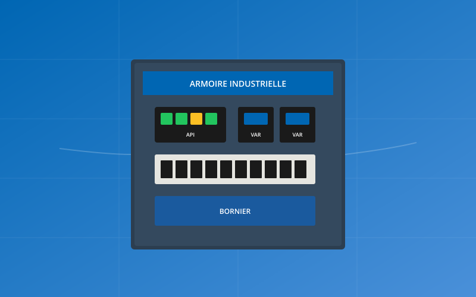
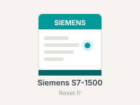
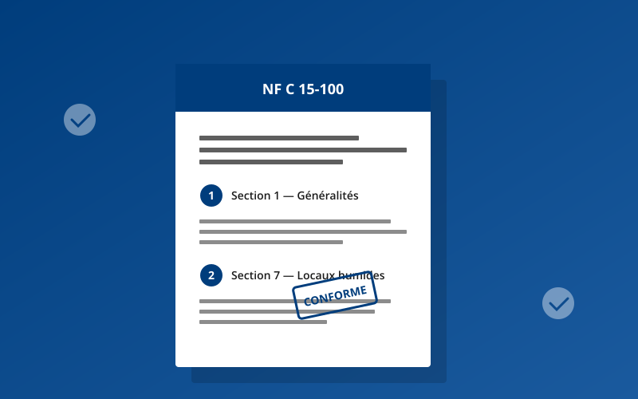

Créer une société d'intégration industrielle : étapes et statuts
SAS, SARL ou entreprise individuelle : quel statut pour un intégrateur ? Immatriculation, assurances.
Guides pour les intégrateurs industriels : création de société, TIA Portal, Règlement Machines UE 2023/1230 et migration automates Siemens.

SAS, SARL ou entreprise individuelle : quel statut pour un intégrateur ? Immatriculation, assurances.

Structure de programme, UDT, bibliothèques, gestion de versions TIA Portal V18/V19 et bonnes pratiques d'organisation.
Différences architecturales, TIA Portal, pièges courants de migration.

IA, cybersécurité, marquage CE : tout ce qui change au 20 janvier 2027.